Chapter 20
Lead in development
20.1 Introduction
Capablanca once expressed the fear that chess would soon die a ‘draw death’. If technique is mastered to perfection, there is no way to break through for any of the two sides, he thought. Fortunately, this defeatism has not become reality. On the contrary: in present-day grandmaster practice, games are fought out to the death, which makes the draw rate – even in top tournaments – relatively low.
Under Kasparov’s influence, even gambit play has returned to the elite level. For example, the 13th World Champion more than once ventured the Evans Gambit, which occurs after 1.e4 e5 2.♘f3 ♘c6 3.♗c4 ♗c5 4.b4!?. And with success: esteemed opponents like Anand and Piket had to bite the dust against him.
In all gambits, material plays a secondary role. A player who invests material does this exclusively with the intention to bring his own pieces into play as quickly as possible, whereas a number of his opponent’s pieces remain on their original squares. Everything revolves around the activity of one’s own pieces and the passivity of the opponent’s pieces. We call this a ‘lead in development’.
There are different possible causes for the occurrence of an advantage in development. For example, careless piece play (moving out the queen too quickly, or playing with the same piece twice) can lead to a lag in development. Another cause can be a faulty exchange. In one of his manuals, Euwe indicated the difference between exchanging and having your opponent exchange. In many cases, the side that exchanges a piece brings his opponent’s pieces into play. Too many pawn moves can have disastrous consequences as well.
In the following game we see how gambit play leads to quick development, and even to a furious attack on the king.
SD 4.5 (B01)
1.e4 d5 2.exd5 ♘f6 3.c4 e6
A curious gambit, which is not as bad as it looks at first sight. Black gives up a centre pawn in order to bring two pieces into play.
4.dxe6 ♗xe6 5.d4 ♗b4+ 6.♗d2 ♕e7 7.♗xb4 ♕xb4+ 8.♘d2
The alternative 8.♕d2 is played more frequently.
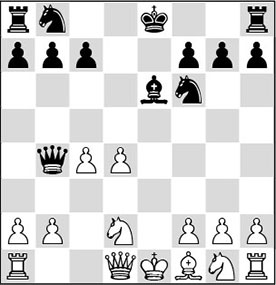
8…♘c6!?
This move is what this gambit is about, Black does not bother about material and brings up new artillery.
9.♘f3
White does not go for the pawn fork that Black allowed with his last move.
The move 9.d5 leads, after 9…0-0-0!, to the following complications:
A) 10.dxe6 ♖he8 11.♗e2 ♖xe6, and White can no longer defend against the many threats;
B) 10.♗e2 ♘xd5 11.cxd5 ♗xd5 and now, for example, 12.♔f1 doesn’t work in view of 12…♗e4!, winning – this line was found by a reader, Jon Florin;
C) 10.dxc6 ♖he8 11.cxb7+ ♔b8 12.♗e2 (better is 12.f3, although also then, after 12…♗xc4+ 13.♗e2 ♕xb2 Black has more than enough play for the sacrificed material) 12…♘e4 13.♘f3 ♘xd2 14.♘xd2 ♗xc4, and Black wins back his piece with interest.
9…0-0-0 10.d5 ♗g4
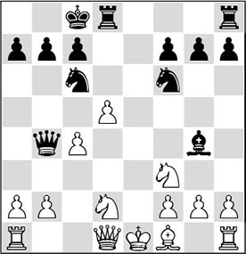
11.♗e2
Once again White does not accept the piece. Whether this is justified, is debatable. After 11.dxc6 ♖he8+ 12.♗e2 ♗xf3 13.gxf3, Black has a choice between two moves to maintain the pressure:
A) 13…♖e6 seems insufficient in view of 14.a3 ♕a5 (14…♕e7!? may be a viable alternative) 15.cxb7+ ♔b8 16.c5!? (the silicon monster comes up with this move. Not 16.b4 ♕e5 17.♖a2 ♘h5!, and Black wins back the piece; or 16.♕c2 ♖de8 17.0-0-0 ♖xe2, and also here, Black has his piece back, and he has splendid compensation for the pawns he has lost along the way) 16…♖xe2+!? (Black must take action now; 16…♖de8 17.0-0 ♖xe2 18.♘b3 ♕a4 19.♘d4 is very good, if not winning for White) 17.♕xe2 (17.♔xe2? ♕b5+ 18.♔e1 ♖e8+, and Black wins) 17…♖e8 18.♕xe8+ ♘xe8 19.♖c1, and White has the better prospects, although Black is by no means without chances;
B) After 13…♘h5 14.a3 (14.♕c2 g6 15.cxb7+ ♔b8 16.a3 ♕e7 17.♘f1) 14…♕e7, Black will follow up with the devastating 15…♘f4.
11…♗xf3 12.♗xf3 ♖he8+ 13.♔f1
White must give up the right to castle, and as a consequence he cannot get the h1-rook into the game. Now Black clearly gets the upper hand.
13…♘d4 14.♕c1 ♘xf3 15.♘xf3 ♖e4 16.b3 ♖de8 17.h3

The diagram position shows the difference in activity between the white and the black pieces. All this for one lousy pawn!
17…♘h5! 18.g3?!
A provocation. Speelman immediately picks up the gauntlet.
18…♘xg3+!?
A piece sacrifice with which the protection of the king is shattered.
19.fxg3 ♖e3 20.♘g1?!
Oddly enough, White should have opted for 20.♔g2!, with which he could have brought his h1-rook into play. Black has nothing better than 20…♖e2+ 21.♔f1, after which this game would have ended peacefully with a repetition of moves.
20…♕d6!
An elegant retreat. The queen aims at the weak point g3 and threatens to intervene decisively via the third rank.
21.♖h2
21.♕b2 was relatively better.
21…♖xg3 22.♕b2 ♕g6! 23.♔f2 ♖ee3!
Threatening 24…♕f5, against which there is nothing sensible to be found.
24.♘e2 ♖gf3+
Not bad, but Speelman misses a nice mate in three: 24…♕f5+ 25.♔e1 ♖g1+ 26.♔d2 ♕d3#.
25.♔e1 ♕g1+ 26.♔d2 ♕xh2 27.♖e1 ♕f2
0-1
In my youth, my then chess trainer Huub van Dongen encouraged me to play gambits. ‘That will teach you to play good chess’, he said. He taught me an opening variation where the fat is in the fire almost at the very start.
With pleasure I present an illustrative little game from those days. Both sides make a lot of mistakes, but the tactics are so attractive that we may be justified in preserving it for posterity:
RL 15.3 (C84)
1.e4 e5 2.♘f3 ♘c6 3.♗b5 a6 4.♗a4 ♘f6 5.d4 exd4 6.e5 ♘e4 7.0-0 ♗e7
A normal move here is 8.♕e2, but after 8…♘c5 Black has no more problems. In Schach-Archiv, a German periodical that included opening variations, the following strange little move had been recommended.
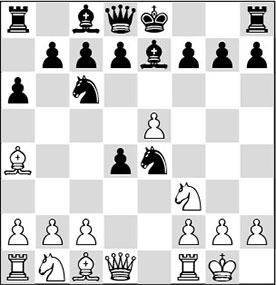
8.b4?!
With this bizarre pawn sacrifice (first played on international level by the Philippine Eugenio Torre), White takes the c5-square from the black knight and he now annoyingly threatens to force the beast to declare itself with 9.♕e2 or 9.♖e1. At first sight this pawn move looks hardly justifiable positionally, but there is more to it than meets the eye!
8…♗xb4
The principled move.
At least reasonably playable for White is 8…♘xb4, in view of 9.♕xd4 f5 10.♗b3 b5 11.c3 c5 12.♕e3 c4 13.cxb4 cxb3 14.♕xb3, and for the time being Black cannot castle.
Also 8…0-0 is known from the game Torre-Wagman, Reggio Emilia 1972/73, which continued 9.a3 f6 10.♖e1 ♘g5 11.♘xg5 fxg5 12.c3, and White had a promising position.
Safer is 8…♘c3, which Karpov played in the Junior World Championship 1969 against Torre. If after 9.♘xc3 dxc3 10.a3 0-0 White had continued with 11.♕d3! (as in two games by Dmitry Godes in the 1960’s), he would have been simply better. Torre tried to disturb Black’s development with 11.♕d5, but got into trouble after 11…b5 12.♗b3 ♗b7.
9.♕e2 ♘c3
Forced. One point of the pawn sacrifice becomes clear after 9…♘c5? 10.♗xc6 dxc6 11.♕c4 a5 12.a3 ♗e6 13.♕xd4 ♕xd4 14.♘xd4, and White has won material.
9…♗c3 10.♕xe4 ♗xa1 11.♗g5 gives White a dangerous initiative.
10.♘xc3
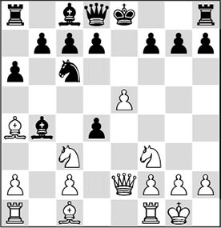
10…dxc3
The safest option.
But who wouldn’t play 10…♗xc3 here? After 11.♗g5 ♘e7, White’s development advantage has taken on huge proportions. Therefore, drastic measures are in order here.
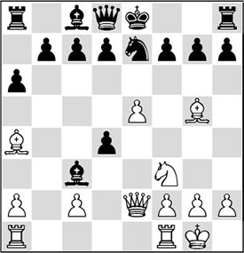
Analysis diagram
As a young player, I analysed the following exciting variations: 12.e6!?. Now there are two possibilities:
A) 12…♗xa1? is the greedy variation, which is refuted quickly: 13.exf7+ ♔xf7 14.♘e5+ ♔g8.
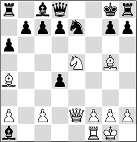
Analysis diagram
A1) Here I had wanted to make a pretty pseudo-sacrifice with 15.♘g6!?, after which the white pieces can intervene decisively: 15…hxg6 16.♗xe7. My main line continued with 16…♕e8? 17.♗b3+ ♔h7 18.♕e4! d5 19.♕h4+ ♔g8 20.♗xd5+, and the white attack crashes through. But unfortunately, the nasty zwischenzug 16…d3!? puts a spanner in the works. After 17.♗b3+ d5 18.♕e4! ♔h7 19.♗xd5, Black must give up the queen with 19…♗f6 20.♗xd8 ♖xd8, but after 21.cxd3 White keeps the better of the play;
A2) 15.♘xd7! is a real killer. Interference moves like …d7-d5 have been ruled out, and Black’s defence given in the other line is not possible now: 15…♗xd7 16.♗b3+ ♔f8 17.♖e1, winning.
B) Better is 12…fxe6, since 13.♕xe6 b5 looks OK for Black. But then White can opt for the strong 14.♕e5!?, which keeps the attack going.
B1) White also wins in a magnificent way after 14…♗xa1 15.♗b3 d6 16.♕xg7 ♔d7 17.♗xe7 ♕xe7
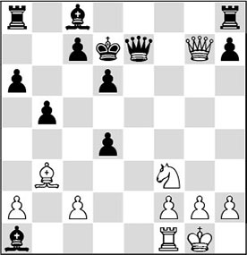
Analysis diagram
18.♗e6+!!;
B2) On 14…bxa4 there follows 15.♖ae1! ♗xe1 16.♖xe1 0-0 17.♗xe7 ♕e8 18.♕d5+, winning;
B3) 14…d6 is the correct defence, after which the critical variation runs as follows: 15.♕xg7 ♖g8 16.♕xh7 ♖xg5 (Black must eliminate the strong bishop) 17.♘xg5 bxa4 18.♖ae1!? (White immediately throws in another exchange, so as to maintain his lead in development) 18…♗xe1 19.♖xe1.
At the cost of quite a lot of material, White has maintained his initiative. The black king is still dwelling in the centre and the black pieces don’t cooperate. It seems that White has (more than) enough compensation.
C) 12…f6! is an interesting and, probably, also strong reply to this sharp attempt. This possibility was found by the young Anne Haast in her game with the also youthful Maurice Swinkels, Geldrop 2007: 13.♘e5!? (Maurice opts for the sharpest move. After the ‘normal’ 13.♖ad1 White can only try to maximally limit the damage, but it is not probable that he will obtain sufficient compensation for the pawns: 13…c5 (13…fxg5?! 14.♘xd4 b5 15.♕f3 is quite obscure) 14.♗d2 ♗xd2 15.♖xd2 (15.♗xd7+ ♗xd7 16.exd7+ ♕xd7 17.♖xd2 yields too little compensation) 15…b5 16.exd7+ ♕xd7 17.♗b3 ♗b7 18.c3 ♔f8 19.♗e6, and White can still try to muddy the waters, but that’s about all) 13…0-0 (Black brings her king into safety as quickly as possible, as many of White’s pieces are now hanging) 14.exd7 d3?! (probably this is not the most accurate continuation. Black could have played quite materialistically with 14…♗xa1 15.dxc8♕ ♖xc8 16.♖xa1 (16.♗b3+ ♔h8) 16…fg5, and White does not have sufficient compensation. By the way, certainly not 16…fxe5?, as after 17.♕xe5 the many pins would kill Black) 15.♘xd3?!. The white player does not find the best plan either. After this move Black is winning, and Anne did not fail to convert. Preferable was 15.♕xd3 ♗xe5 (15…♗xa1 16.♖xa1 fxg5 17.♖d1 with equality) 16.♖ae1 b5 17.dc8♕ and also here, White has enough.
11.♗xc6 bxc6
Black cannot open the d-file, as then he will fall victim on that file: 11…dxc6 12.♗g5 ♗e7 13.♖ad1 ♗d7 14.e6! fxe6 15.♘e5, and White has an enormous attack. Here is an illustrative example: 15…♗xg5 16.♕h5+ g6 17.♘xg6, and Black will not get out of this alive.
12.♕c4 a5 13.♕g4
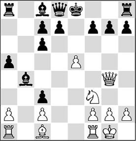
13…♗f8?!
Played after a long think. Theory books recommend 13…♔f8!?. A possible continuation is: 14.♗g5 ♗e7 15.♖ab1, and White has compensation for the sacrificed pawns.
Other moves are dangerous for Black. For example, 13…g6 is not to be recommended in view of 14.♗g5 d5 (after 14…♗e7 15.♖fe1!, White has strong pressure on the dark squares) 15.e6! ♗xe6 16.♕d4, and White wins material. In a game Grooten-Faber, played two years later, Black sacrificed the exchange with 13…0-0!? 14.♗h6 g6, for which he obtained some compensation.
14.♗g5 d5 15.♕a4 ♕d7
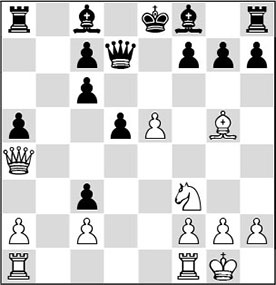
16.e6!
White does not care about one pawn more or less. His pieces are much more active than Black’s, while the enemy king is also still stuck in the centre. Which is one more reason to open files there.
16…fxe6?
Here Black should definitely have continued with 16…♕d6 17.exf7+ ♔xf7, which, however, would also have led to a white advantage after 18.♗f4.
17.♖fe1?
An ugly miss that could have cost me the game. It’s incredible that I failed to deal the decisive blow with 17.♘e5!. Now Black loses his queen after 17…♕d6 18.♕f4! since the invasion on f7 cannot be averted. After 18…♗e7 19.♕f7+ ♔d8 20.♗xe7+ ♕xe7 21.♘xc6+, White wins.
17…♗d6?!
Much stronger was 17…♗b4!, since after 18.a3 ♗c5 19.♘e5 ♕d6 Black has no problems whatsoever.
18.♖xe6+
White must take now, as otherwise he will be too much material behind, whilst the black player threatens to complete his development.
18…♔f7?
The black player had fallen into time-trouble, and because of this he made a mistake. A better defence was 18…♕xe6, which would have led to an unclear struggle after 19.♕xc6+ ♔f7 20.♕xa8 ♖e8 21.♕xa5.
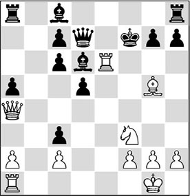
19.♖ae1?
The orgy of mistakes continues. The nice thing about this game is the multitude of beautiful motifs, most of which are missed by both – still inexperienced – players.
With the beautiful 19.♖e7+, White could have won the queen. 19…♗xe7 20.♘e5+ is a banal knight fork, but it does win!
19…♕xe6 20.♖xe6 ♗xe6 21.♕xc6 ♖ab8 22.♔f1?
Very strange. The right move was 22.g3, but Black is already slightly better.
22…♖b2?!
The normal continuation was 22…♖he8!, completing his development, and in the meantime bringing on some heavy anti-aircraft guns. It looks as if White will come to grief here.
23.♕xc3?!
Now White could have got back into the game with 23.♘d4!.
23…♖xa2?!
Black has set his sights on the passed a-pawn, but now he is confronted with a problem on the other side of the board.
With 23…♖b1+ 24.♔e2 ♖e8 25.♗e3 ♗d7! it would have been the white king’s turn to be cornered.
24.♗h6!
Finally White makes a good move again. He exploits the fact that Black has not yet brought his h8-rook into play. And Black will pay dearly for this.
24…♖g8 25.♘g5+ ♔g6 26.♘xe6 ♔xh6
It is interesting to see how White secures the loot after 26…gxh6:
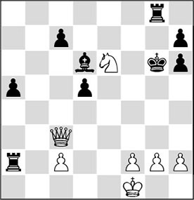
Analysis diagram
With the obscure 27.♕c6!, White introduces a pin along the sixth rank, and with it the lethal threat of 28.♘xc7. Furthermore, the important d5-pawn is hanging. This position once more proves the adage that queen plus knight form a very dangerous attacking tandem.
27.g3
Whatever drove me to play this move I still fail to understand today, but fortunately this time it doesn’t spoil the win.
27.♕h3+ ♔g6 28.♘xc7! would have been simple enough.
27…♖a3 28.♕d2+ ♔g6
Here, 28…g5 would not offer salvation because of 29.♘xg5 ♖xg5 30.h4.
29.♕xd5
All coordination between the black pieces is lost, but conducting an attack remains terribly difficult for White.
Here, 29.♕g5+ ♔f7 30.♕xd5 ♔e7 31.♘xc7 was not only more attractive, but also stronger.
29…♖e8 30.g4
But this is the right way to continue. White creates an escape square for the king and introduces mate threats on f5 and h5.
30…♔f6 31.♕f5+ ♔e7 32.♘xg7 ♖f8 33.♕xh7 ♖af3 34.♘f5+ ♔d8 35.♔e2
And here the black player had had enough.
20.2 The typical tempo gain
A singular phenomenon in chess is the simultaneous display. Club players find it fascinating that one man is able to handle a large number of opponents. The simultaneous player runs from board to board, and quickly makes his moves. In just a few seconds he spots which move he should play. Only sporadically does he need a little more time to correctly assess the positions, which keep changing quickly.
Even more spectacular is the blindfold simultaneous display, where the simultaneous player makes all his moves without looking at the board. In former years the American Paul Morphy was famous for his achievements in this field. Eight opponents meant nothing to him. Of the Argentinean Miguel Najdorf it is known that he broke the blindfold simultaneous world record in 1947 by achieving the incredible score of 39 wins, four draws and only two defeats on 45 boards in 23½ hours. Even more incredibly, this record was broken by the Hungarian Janos Flesch, who took on no less than 52 opponents in 1960. He won 31 games, 18 ended in a draw and lost only three times. His opponents were not at all weak, which makes this achievement border on madness. And there are people who have cast doubts upon this achievement.
In 2016, Timur Gareyev broke Najdorf’s record in Las Vegas, playing 48 opponents while riding a spin bike, winning 35 games, drawing 7 and losing 6.
Apparently, blindfold chess is not entirely healthy for the human mind. In the former Soviet Union the top players were prohibited from engaging in this discipline. From Najdorf we know that after his record attempt, he could not sleep for three days, and that in the end he was found in a cinema, exhausted, lying in a chair.
We could not give an answer here as to how and why a simultaneous player is able to achieve such results. Logically, pattern recognition should play an important role. I have built up some experience as a simultaneous player in the course of the years myself. Afterwards, I was often surprised by the reason that was given for the simultaneous player’s success: a difference in opening knowledge. True, an experienced player will generally have more knowledge of opening systems than his opponents, but this alone does not suffice to achieve scores this high.
More importantly, his understanding of most aspects of the game is better than that of the weak club player. Knowledge of openings is certainly not the decisive factor, although people often think so. In one frequently reappearing case I have to admit that a little theoretical knowledge has served me well. In the following opening, especially in simultaneous games, players will sin against the following simple principle:
The typical tempo gain – 1
1.d4 d5 2.c4 ♘f6?
In his book My System, Nimzowitsch already pointed out this strategic mistake. Black should play 2…e6, 2…c6 or 2…dxc4 here. With the text move he loses an important tempo, and he also loses influence in the centre. With his next move, White exploits the black set-up. The strange thing is that this mistake is made remarkably often.
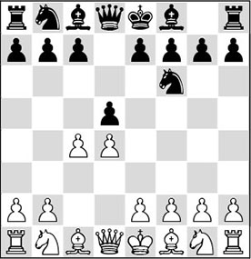
3.cxd5! ♕xd5
Relatively best under the circumstances. After 3…♘xd5 Nimzowitsch indicates that White gets free control of the centre with 4.e4?!. But here, the Teacher is mistaken. After 4…♘f6 5.♘c3 Black has the counter-thrust 5…e5! at his disposal, which, after 6.dxe5 ♕xd1+ 7.♔xd1 ♘g4, leads to a position where Black is not worse.
Much more accurate is 4.♘f3! with the threat of 5.e4. After either 4…e6 5.e4 ♘f6 6.♘c3 ♗b4 7.♗d3 or 4…♗f5 5.♕b3! ♘b6 6.♘c3, White has taken control of the centre.
4.♘c3 ♕a5
Analogously to the Scandinavian, Black develops his queen to this square. After 4…♕d8 5.e4, White will achieve what he wants.
5.♘f3
And White’s position is already very pleasant.
The reader understands that I have revealed an important weapon from my simultaneous displays! Here is another example where the black player not only neglects his development, but also gives up the centre without a fight.
IG 2.2 (C54)
The white player starts by giving odds: he plays without a rook on a1 but with the a2-pawn on a3.
1.e4 e5 2.♘f3 ♘c6 3.♗c4 ♗c5 4.c3
With this move, White wants to build up a strong pawn centre.
4…♘f6
Black would have been wise to continue with 4…♕e7 5.d4 ♗b6, after which the pawn on e5 is protected. He does not have to get mixed up in 5…exd4, which will have disastrous consequences for him in the game.
5.d4 exd4 6.cxd4 ♗b6 7.d5 ♘e7 8.e5
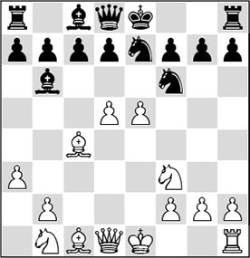
The white pawn centre, which has become mobile, now rolls on irresistibly.
8…♘e4 9.d6 cxd6 10.exd6 ♘xf2 11.♕b3 ♘xh1 12.♗xf7+ ♔f8 13.♗g5
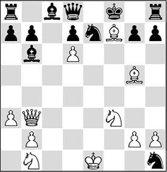
And Black resigned. But even though he has to give up the queen, the material damage remains within bounds. In earlier times, players used to resign as soon as they lost the queen. In our present computer age, many positions still turn out to be playable. More than that, Black can play 13…♘f5 in the final position, obtaining equal chances.
Games with odds were played often in former times. That was how the differences in playing strength were compensated. Incidentally, in one game the absence of the rook on a1 led to great confusion. During the game, the player who had started without the ♖a1, got the idea that queenside castling might save him out of a delicate situation. So suddenly he brought the mysterious move ♔e1-c1 on the board. Of course, his opponent protested against this peculiar continuation. The defence of the white player was that he still had the right to castle, with the ‘ghost of the rook’ on a1!
Now that we have acquired a taste for playing with a lead in development, let’s continue with another telling example.
KP 1.9 (C40)
Leningrad/Moscow ch-URS 1941 (8)
1.e4 e5 2.♘f3 d5?!
A dubious opening system.
3.♘xe5 ♕e7?
Black is stepping on the wrong track. After 3…♗d6 the position is still playable.
4.d4 f6 5.♘d3 dxe4 6.♘f4 ♕f7?
Again, a loss of time, even though the queen was quite in the way of its own pieces.
7.♘d2!
True, with this knight move White blocks his queen’s bishop, but he does prepare 8.♗c4, taking control of the game.
7…♗f5 8.g4
Boleslavsky is really going for it.
8…♗g6 9.♗c4 ♕d7 10.♕e2 ♕xd4
Gobbling up pawns while the position is on fire is not to be recommended!
11.♘e6
Here, 11.♘xg6 hxg6 12.♘xe4 was even stronger.
11…♕b6
Also after 11…♕e5 12.f4! ♕a5 13.c3, Black has no chance to survive.
12.♘xe4 ♘d7 13.♗f4 ♘e5 14.0-0-0 ♗f7
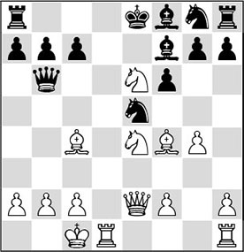
Now that White has mobilized all his pieces, the decision is not far off. What follows is a slugfest.
15.♘4g5! fxg5 16.♗xe5
More elegant and even better was 16.♘xc7+! ♕xc7 17.♗b5+ ♔e7 18.♗xe5, and the pieces can be put back on their starting squares.
16…♗xe6 17.♗xc7
1-0
20.3 Grabbing pawns can lead to a lack of activity
We have already seen that grabbing a pawn in the opening is a perilous undertaking. Grandmaster John van der Wiel also once experienced that material gain does not bring universal happiness. He was crushed by the English warhorse Julian Hodgson.
QP 7.16 (A45)
1.d4 ♘f6 2.♗g5
The Trompowsky Opening, for which the white player could take out a patent. Hodgson has provided the system with a series of new ideas that are well worth studying. Even in pre-DVD times, videos by him already appeared on this subject…
2…c5
Two important alternatives here are 2…♘e4 and 2…e6.
3.♗xf6 gxf6 4.d5 ♕b6 5.♕c1 ♗h6
A nice idea.
6.e3
The bishop cannot be taken in view of 6.♕xh6 ♕xb2, and the rook on a1 is irrevocably lost.
6…f5
This must still have been home preparation by Van der Wiel. However, the text move does nothing for his development.
7.c4
And neither does this move, but it does strengthen White’s position in the centre.
7…f4
In this way, Black wants to get rid of his doubled pawns, but he forgets to develop.
8.exf4 ♗xf4
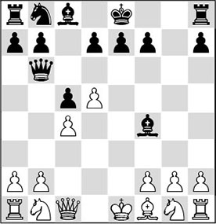
9.♕xf4!
This must have been the last thing Black expected. White abandons his queenside in order to activate his pieces as quickly as possible.
9…♕xb2 10.♘e2 ♕xa1 11.♘c3
Thus, Hodgson just manages to keep things together, but at first sight it is hard to imagine that White has enough compensation for the exchange and the pawn he has sacrificed. Still, he has managed to sneak the queen and a knight into play.
11…♕b2
Understandably, Black wants to bring back his queen as soon as possible, so that it can assist in the defence, but maybe he should have waited a while with this.
There was still time for 11…d6, since White cannot catch the queen: 12.♕d2 ♗f5 13.♗d3 ♗xd3 14.♕xd3 ♕b2. After the text move it becomes clear that Black has brought a hornets’ nest about his ears.
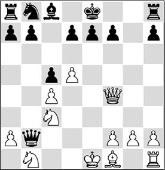
12.d6!
White allows himself the time to play this little pawn move, the consequences of which will soon become visible. The black camp is divided in two, square d5 is vacated for a white knight, and, besides, Black’s bishop on c8 is boxed in.
12…♘c6
Remarkably, this position appeared on the board for a second time much later. None other than grandmaster Alexey Shirov got mixed up in this line against the English grandmaster (and established theoretician) Peter Wells. I happened to be in the tournament hall. In Gibraltar 2006, I took a stroll during my game and suddenly spotted this position. I couldn’t believe my eyes, since I knew that the game Hodgson-Van der Wiel had appeared in several books and publications. It was clear, however, that it was all new to Shirov, since he used oceans of time while Wells was walking around leisurely.
The first deviation occurred here: 12…♕c2, but after 13.♕e3! Shirov immediately threw in the towel and left the playing hall. Rarely will he have suffered such a shameful defeat against a much lower rated opponent.
13.♗d3 exd6
It’s a hell of a mess for Black. Also after 13…b6 14.0-0 ♗b7, both 15.♘d5 and 15.dxe7 are virtually lethal.
14.0-0
It is amusing to see how White first takes his time to complete his development, before going over to the offensive.
14…♘e5 15.♕f6
Now, 15.♖e1 was even stronger, since 15…0-0 fails to 16.♖xe5 dxe5 17.♕g5+ ♔h8 18.♕h6, and White is threatening mate on two squares.
15…0-0
The king is removed from the draughty centre, but it will soon find that it will be heavily besieged on the flank as well.
16.♘d5 ♖e8 17.♕g5+ ♘g6 18.♘f6+ ♔f8 19.♕h6+ ♔e7 20.♘d5+ ♔d8 21.♗xg6 hxg6
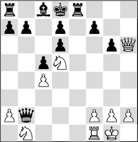
The irony of fate is that the black king has been chased back to the centre, where it will be trapped after all.
22.♘bc3!
The crowning glory on a masterfully played game. With this final move White puts an end to Black’s last hope (22.♕g5+?! f6 23.♘xf6 ♕e5!). Now that he has the black player in a hold, the latter, understandably, ‘taps out’ (to maintain the jugo analogy).
20.4 Playing with the same piece twice
We have learned that loss of time should be avoided as much as possible in the opening. Morphy was one of the first players who applied the principle of ‘developing a new piece on every move’ very consistently and straightforwardly. His crystal-clear play doesn’t fail to impress even today. Not for nothing did Fischer dub him the greatest player of all time. One of the secrets of Morphy’s play was that, while he was developing his own game, he also managed to disorganize his opponent’s play. Much later it was Nimzowitsch who concluded that some players sinned against the laws of the game. In the following example the black player really oversteps the bounds.
The typical tempo gain – 2
1.e4 e5 2.f4 ♘f6 3.fxe5 ♘xe4 4.♘f3
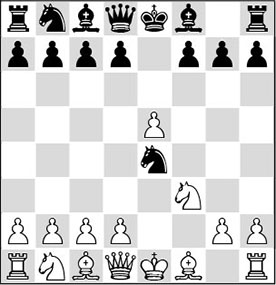
4…♘c6?
This looks like a good developing move, but in fact it is a blunder. Now the black knights will be hunted like wounded game.
5.d3 ♘c5 6.d4 ♘e4 7.d5 ♘b8
And now, with a new attack on the ♘e4, White can continue his development, while Black has no time to bring a new piece into the game. White can play 8.♗d3, whereas 8.♘bd2 and 8.♕e2 ♘c5 9.♘c3 are also interesting.
Nimzowitsch calls this ‘exchanging a Tempo-gobbler’, meaning the black knight on e4. With the disappearance of the Tempo-user for the ‘newborn’ knight on d2, all the tempi that the black knight has already gobbled up also disappear. Such a Tempo-user is not always a disadvantage. The English grandmaster Speelman has shown many times that in the position arising after 1.c4 e5 2.♘c3 ♘f6 3.♘f3 ♘c6 4.g3, the move 4…♘d4!? is quite playable. Even though Black moves the same piece twice, White can hardly take advantage of the time he has gained. This is because White has not chosen an aggressive set-up, allowing Black to permit himself a slight tempo loss.
This case proves that at the very moment you define a rule, you immediately have the exception as well. When Nimzowitsch wrote his book My System, he was agitating against Tarrasch’s dogmas. With the help of the rules established by his predecessor, Nimzowitsch established his own axioms. He considered himself to be a rebel, but in our time we could call many of his findings commonplace. One of the ‘Hypermoderns’ of that time, Richard Réti, already pointed out several shortcomings in Nimzowitsch’s ideas.
KP 9.4 (C46)
1.e4 e5 2.♘f3 ♘c6 3.♘c3 ♗c5?! 4.♘xe5! ♘xe5 5.d4 ♗xd4
Not the best move. The white queen will be very dominant in the centre now.
6.♕xd4 ♕f6?
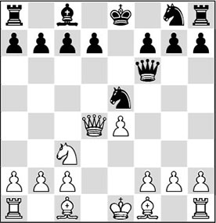
Now things go from bad to worse. Black thinks he has made a good move, since he is threatening 7…♘f3+, and as soon as White parries this threat, he hopes to continue with 8…♘c6, neutralizing White’s advantage. Réti shows that he is not hampered by dogmatic thinking.
7.♘b5!
The white player is ignoring the rule that you shouldn’t play the same piece twice in the opening. After Black’s last move White immediately aims at his target: the weakened pawn on c7. In passing, the queen is also protected, ruling out the threat of …♘f3+. Black’s reply is forced.
7…♔d8 8.♕c5!
Again White shows that he is not hindered by ‘mechanical’ thinking. The text move is already the final blow for Black. The double threat of 9.♕xc7+ and 9.♕f8# cannot be prevented without material loss. Therefore, Black resigned. With justification, since his position is hopeless after 8…♘h6 9.♕xc7+ ♔e7 10.♘c3!.
20.5 Converting a lead in development into other advantages
You have to ‘learn from the classics’, as the saying goes. When studying chess, it can do no harm to study the classics from time to time. Especially games by Fischer are worth playing over. The study of the following game turned out to be very valuable for me.
EO 31.1 (A36)
Palma de Mallorca izt 1970 (2)
1.c4 g6 2.♘c3 ♗g7 3.g3 c5 4.♗g2 ♘c6 5.b3?!
A suspicious plan, slightly neglecting the centre.
5…e6
Now that White is playing on the flank, Black aims at the centre.
6.♗b2 ♘ge7 7.♘a4?!
Smyslov would like to swap the dark-squared bishops, but he underestimates the fact that his queen’s knight will be misplaced as a consequence.
7…♗xb2 8.♘xb2 0-0 9.e3?!
Again, losing time. Much better was the healthy developing move 9.♘f3.
9…d5 10.cxd5 ♘xd5 11.♘e2
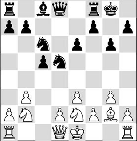
11…b6!
A strong reply by Fischer. Now that White has weakened the d3-square with his ninth move, Black aims his pieces at this square. The intention of his last move is to try and take advantage of the d3 weakness with …♘b4 and …♗a6.
12.d4?!
Perhaps White could have limited the damage with the modest 12.a3.
12…♗a6!
Actively played! Black mobilizes a different piece on every new move, and thereby exerts pressure on the vulnerable white centre.
13.dxc5 ♕f6
Not 13…bxc5, which would saddle Black with an ugly weakness on c5. With the text move he keeps White quite busy.
14.♘c4 ♘c3
The intention behind the previous move. White is given no time to breathe, and with this fierce action he is deprived of the right to castle.
15.♘xc3
After 15.♕c2 ♘xe2 16.♔xe2 ♖ac8, White will be in even greater trouble than in the game.
15…♕xc3+ 16.♔f1
16.♘d2 is not to be recommended in view of 16…♘b4!, when the white position collapses quickly. After the text move Black, at the cost of a pawn, brings all his pieces into play at high speed.
16…♖fd8 17.♕c1 ♗xc4+ 18.bxc4 ♕d3+ 19.♔g1 ♖ac8 20.cxb6 axb6
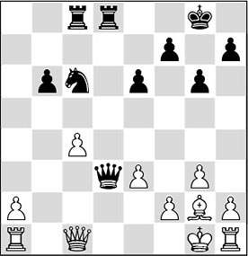
Time to draw up the balance. Black has lost a pawn, but with his efficient piece play he has mobilized all his forces. In the meantime, White has been forced to give up castling, as a result of which it is hard to bring the h1-rook into play. In practice, this means that in the centre and on the queenside White will be playing with a rook less for a long time.
21.♕b2
A logical move. White’s queen leaves the c-file and he tries to activate his h1-rook by means of a march of his h-pawn.
Another idea for White is 21.♗xc6 ♖xc6 22.♔g2, in order, after 22…♖xc4, to continue with 23.♕d1 ♕e4+ 24.♕f3 ♕xf3+ 25.♔xf3 ♖d2 26.♖hd1, and it looks as though White will escape with a draw.
However, Black has the stronger option of 22…♕e4+!. Now, 23.f3 is more or less forced, which amounts to an unpleasant weakening. After 23…♕d3 24.♖d1 (neither does 24.♕b2 ♖xc4 bring any relief: 25.♖ac1 ♖xc1 26.♖xc1 ♕xe3 27.♖c2 e5!, with good winning chances for Black) 24…♕e2+ 25.♔h3 ♖dc8!, the future doesn’t look bright for White.
21…♘a5 22.h4 ♘xc4 23.♕f6 ♕f5!
Played without hesitation by Fischer, which illustrates how effective his way of thinking was. The queen is White’s only active piece, so Fischer gladly trades it off. Because of White’s passive pieces on the queenside, Black now converts his material disadvantage into an advantage.
24.♕xf5 gxf5 25.h5 ♖d2 26.♖c1?
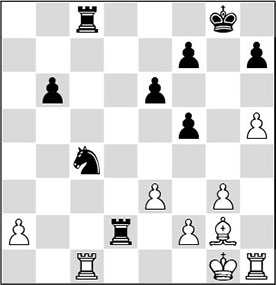
Activating the wrong rook. According to Soltis, 26.♖h4 ♘e5 27.♖d4 ♖b2 28.e4 would have given drawing chances.
26…♖c5!
Another extremely strong move. The knight is unpinned so it can be moved.
27.♖h4 ♘e5 28.♖xc5
White is forced to allow his opponent this highly dangerous c-pawn. After 28.♖b1 ♖cc2 29.♖xb6 ♖xf2 30.♗b7 ♖fe2, his position would collapse like a house of cards.
28…bxc5 29.♖a4
With great effort, Smyslov has finally managed to get his rook into play, but he has not been able to prevent Fischer converting his lead in development into several other advantages. Besides the active rook and the well-placed knight, he has yet another big trump card: the passed c-pawn, which will bring him victory!
29…c4 30.h6 ♔f8
Black has to stay awake: White was threatening a back-rank mate!
31.♖a8+?!
Relatively better was 31.♖a3, in order to impede the march of the pawn for a little longer.
31…♔e7 32.♖c8
There was no time for 32.a4 in view of 32…c3 33.♖c8 c2 34.♗f1 ♘f3+ 35.♔g2 ♘e1+, and Black’s passed pawn decides.
32…♖xa2 33.♗f1 ♖c2 34.♔g2
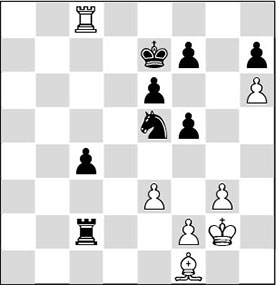
34…♘g4!
The simplest way to liquidate. Here we see another example of Fischer’s flexible way of thinking. Black trades one advantage for another, and apparently he has no difficulty parting with his beautiful passed pawn.
By the way, 34…c3 35.♔g1 ♘g4 36.♗d3 would have been similar.
35.♔g1 ♖xf2 36.♗xc4 ♖f3
In this way, Black picks up another pawn.
37.♔g2 ♖xe3 38.♖h8 ♘xh6 39.♖xh7 ♘g4 40.♗b5 ♖b3 41.♗c6 ♖b2+ 42.♔g1 ♘e5 43.♗a8 ♖b8!
For the last time in this game, Fischer demonstrates his fabulous technique. Now the white rook is exchanged by force, so he can finish the game ‘with his eyes closed’.
White resigned as after 43…♖b8 44.♗h1 ♘g6 45.♔f2 ♖h8 46.♖xh8 ♘xh8, he would be counted out once and for all.
When I played over this game one more time, the principle applied by Fischer clearly appeared before my mind’s eye. After White has lost the right to castle, you could draw an imaginary line through the middle of the board. On the queenside, Black is actually playing with an extra rook, and he takes advantage of this by exchanging as many pieces as possible on this wing. The fewer pieces there are left, the more White will feel his lack of defenders! I could not have imagined then that one time I would be able to put this principle into practice in a nice way myself.
RE 15.8 (A00)
1.g3 d5 2.♗g2 e5 3.d3 ♘f6 4.c4 d4 5.♘f3 ♘c6 6.0-0 ♗e7?!
Black should have played 6…a5 first.
7.e3?!
White could have profited from Black’s inaccuracy by immediately seizing the initiative here with 7.b4!, with the possible continuation 7…♗xb4 8.♘xe5 ♘xe5 9.♕a4+.
7…0-0 8.exd4 exd4 9.♗g5 ♗f5
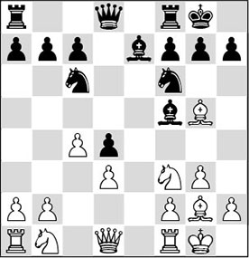
10.a3?!
In this position, which has arisen from a Reversed Benoni, White still has to complete his development. White will later regret this ‘innocent’ little pawn move.
The logical way to play is 10.♘a3, and then continue with 11.♘c2 followed by ♖a1-b1, ♕d1-d2, trying to carry through the b2-b4 push. In that event we should rate White’s chances a little higher.
10…a5 11.♖e1 ♖e8 12.♕c2 ♕d7
Another interesting thought was 12…♘d7!?.
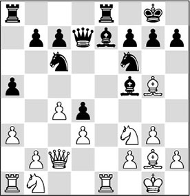
13.♘e5?
White is riding roughshod over the rule of thumb that tells us to ‘never move the same piece twice in the opening’.
There would still be not much of a problem if White had now played the developing move 13.♘bd2. After 13…h6 14.♗xf6 ♗xf6 15.♖ad1 (better than 15.♘e4?! ♗xe4 16.♖xe4 ♖xe4 17.dxe4 d3, and the passed pawn will yield Black the advantage) 15…♖ad8, chances are balanced.
13…♘xe5 14.♖xe5
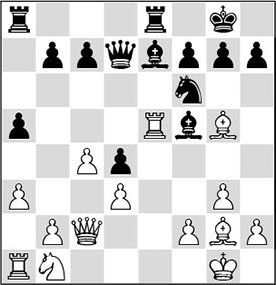
When this position appeared on the board, it called up an association with the game Smyslov-Fischer in my mind. What had the American done with his opponent? Hadn’t he drawn an imaginary line through the middle? In my case, White’s inactive pieces are on the queenside, and the active ones are on the other side of the board. If Black now trades off White’s active pieces, White is left with passive officers only. It goes to show what good it can do to have an exemplary game in the back of your head!
14…♘g4! 15.♖xe7 ♖xe7 16.♗xe7 ♕xe7
White now faces an unpleasant situation. He still cannot develop his knight (17.♘d2? ♕e2!, winning a pawn), and at the same time Black is threatening 17…♕e1+, which would decide the issue immediately. The following move is more or less forced, but it plays right into Black’s hands.
17.♗e4 ♗xe4
Black is allowed to trade off even more active white pieces, which is exactly what he wants.
18.dxe4
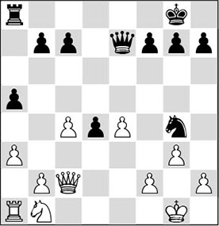
One more move is what White needs to bring his position in order: the move ♘b1-d2. Can Black keep his opponent occupied?
18…♕f6!
Yes, he can! 18…♕c5 would have served the same purpose.
19.h3
There is no reasonable alternative. 19.♘d2 is still out of the question, and 19.♕e2 is refuted by 19…d3 20.♕xg4 ♕xb2, and Black wins. 19.f4 is no reasonable alternative either. After 19…d3 20.♕c3 ♕e7 21.♕d2 (21.♕xd3 ♕c5+, winning) 21…♕xe4, Black has won a crucial pawn.
19…d3!
This push has been hanging in the air, but it had to be accurately calculated. The follow-up is forced.
20.♕d2 ♘e5 21.♕c3
Again White must have thought: now I just have to play ♘b1-d2, and the worst will be behind me. But he is in for a nasty surprise…
Of course, 21.♔g2? wasn’t possible on account of 21…♕f3+ 22.♔g1 ♕xe4, and the knight check on f3 is devastating. On 21.♕c1, Black uses his lead in development to attack the black kingside: 21…h5! 22.♘d2 h4 23.♔g2 ♖a6, and all Black’s pieces are in the game.
21…♘f3+ 22.♔g2
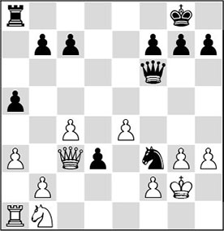
22…d2!!
A nice way of forcing the passed pawn through.
23.♕xf6
There was no defence left. For example, 23.♕xf3? fails to 23…♕xf3+ 24.♔xf3 d1♕+; and 23.♘xd2? ♕xc3 24.bxc3 ♘xd2 costs White a piece.
23…♘e1+
With this intermediate check Black first brings his knight into safety, before proceeding to the order of the day.
24.♔h2 d1♕
A peculiar transaction has taken place, and if we count we see that, on balance, Black has handed in a pawn. But his lead in development is the leading theme here. The white queen is under attack, and so White has to lose time again. With all this, Tolhuizen still doesn’t manage to activate his two unfortunate pieces in the left corner.
25.♕c3
After 25.♕f5 ♘c2, he would also have been forced to hand over heaps of material.
25…♕e2
Afterwards, a few people asked me why I hadn’t played 25…♘c2 here. Such materialists! Certainly, Black wins an exchange, but with such a surplus in activity Black can go for bigger game: the white king!
26.♔g1
Clearly, White can prevent the threat of 26…♕f1+ only by giving up lots of material.
26…♕xe4
Since the white player hadn’t succeeded in carrying out the following move throughout the entire game, he now took hold of his knight on b1. And as he put it on the d2-square he told me: ‘I’ve been trying to play this move all the time, and since I haven’t succeeded, I will do it now.’ With this sporting gesture Tolhuizen allowed me the honour to crown my work.
27.♘d2
Also after 27.♔f1 ♖e8, the curtain falls.
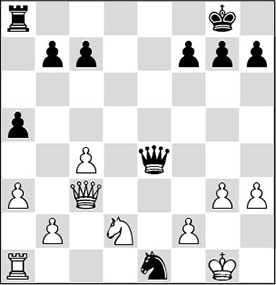
27…♕g2
Mate.
Exercises

White has brought all his pieces into play, whereas Black has developed only two. Therefore it is no surprise that there is a combination in the position. Do you see which one?
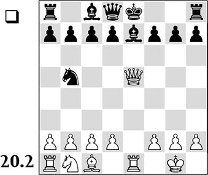
Black has just played 8…♘d4xb5 instead of the safe 8…0-0. How did White punish this knight move?
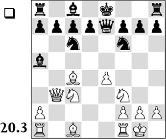
White has mobilized virtually all his pieces, whereas a few of Black’s pieces are not yet in play. So it is time for White to strike hard. Give a convincing variation.
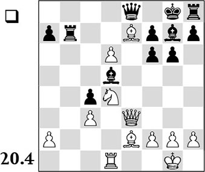
White has invested an exchange for a great surplus in activity. As long as the rook on h8 cannot be brought into play, Black has serious problems. How can White continue powerfully?